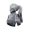
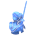
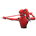
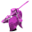

Maelle

Atributos Iniciais
- Saúde 195
- Poder de Ataque 105
- Velocidade 212
- Defesa 0
- Taxa Crítica 5%
Maelle empunha uma Rapier e, assim como Lune, as habilidades de Maelle mudam suas posturas, que são as seguintes:
-

Sem postura: Sem efeitos especiais. Geralmente começa nesta postura.
-

Postura defensiva: Sofre menos dano e ganha 1 PA por Aparar ou Esquivar.
-

Postura ofensiva: Causa mais dano(50% normalmente), mas também recebe mais dano.(50% normalmente)
-

Postura Virtuosa: Causa muito mais dano. (200% normalmente)
Ativar e entrar em uma Postura diferente concede a Maelle 1 PA, então alternar entre suas posturas sem ser interrompida maximiza os efeitos de suas habilidades. Caso contrário, ela retornará para a Postura Sem Postura após a habilidade. Maelle também pode alternar entre Posturas Defensivas e Ofensivas usando um ataque básico.